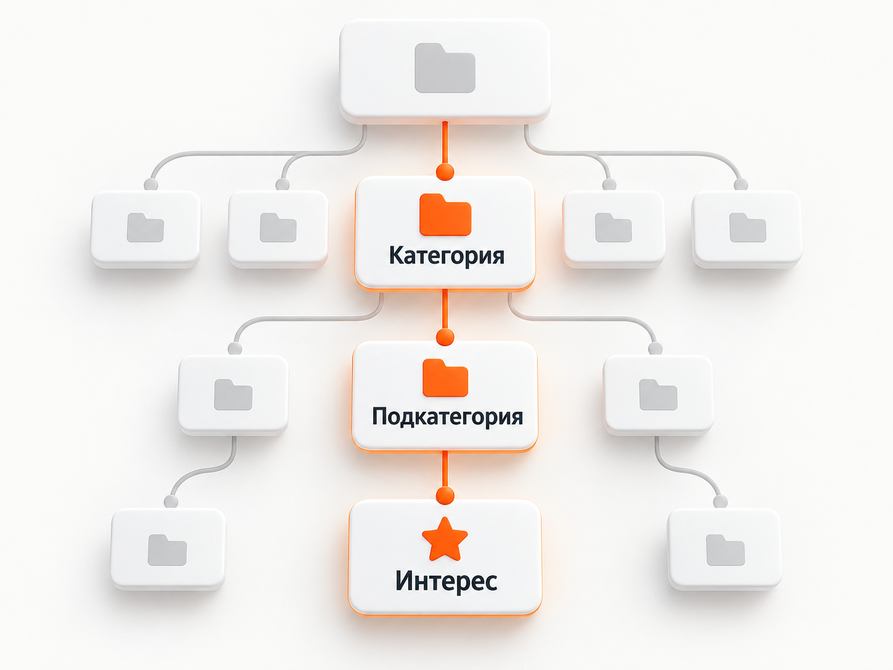

Яндекс Директ
Интересы и привычки Яндекс Директ: как работают и как выбрать таргетинги
Интересы и привычки в Яндекс Директе - это таргетинг, который помогает находить людей по их недавнему поведению: посещенным сайтам и приложениям, тематике поисковых запросов, маршрутам в Яндекс Картах и другим сигналам.
В отличие от обычной рекламы на Поиске, пользователю не обязательно прямо сейчас вводить запрос, связанный с вашим товаром. Директ определяет, что человек недавно проявлял подходящий интерес, и может показать ему рекламу в сетях. Краткосрочные интересы используются именно для показов в сетях.
Ниже на странице я добавил отдельный каталог интересов Яндекс Директа. В нем можно не угадывать формулировки через строку поиска рекламного кабинета, а посмотреть дерево категорий целиком, найти нужную тематику и изучить официальное описание интереса.
Что такое интересы и привычки в Яндекс Директе
Главная особенность этого таргетинга - Яндекс пытается определить актуальную потребность человека по его поведению.
Например, пользователь в последние дни изучал определенную тему, посещал тематические сайты или приложения, строил связанные маршруты. Для рекламной системы это набор сигналов, по которому человека можно отнести к определенной аудитории.
Яндекс называет такие интересы краткосрочными. Они отражают то, чем человек интересуется сейчас или интересовался в последние несколько дней. Данные о поведении обновляются в режиме реального времени.
Это отличается от долгосрочных интересов в Яндекс Метрике. Метрика скорее помогает понять устойчивый портрет посетителей сайта, а Директ использует краткосрочные интересы для рекламного таргетинга. Яндекс отдельно предупреждает, что эти данные нельзя считать одним и тем же показателем.
Если нужна базовая механика рекламы в сетях, отдельно рекомендую материал «Что такое РСЯ в Яндекс Директ».
Как Яндекс определяет интерес пользователя
Для определения аудитории используется технология Крипта. Она анализирует поведение пользователей и ищет признаки, характерные для определенных групп людей.
Среди сигналов Яндекс указывает:
- тематику поисковых запросов;
- посещенные сайты;
- используемые приложения;
- интерес к магазинам и организациям;
- время активности;
- маршруты и посещения из Яндекс Карт.
По совокупности таких сигналов система определяет, к каким аудиториям может относиться конкретный пользователь.
Это принципиальное отличие от ключевой фразы. Если человек вводит «купить диван», его намерение понятно из самого запроса. В случае интересов Яндекс восстанавливает намерение по нескольким поведенческим признакам.
Поэтому я бы воспринимал интересы и привычки именно как дополнительный способ поиска аудитории, а не как точную замену поисковой семантике.
Что можно задавать в блоке «Интересы и привычки»
Название блока немного сбивает с толку. В современном Директе там используются не только категории из официального справочника интересов.
Система может предложить несколько типов сигналов:
- интересы пользователей;
- организации и места;
- сайты;
- приложения;
- похожие варианты, которые Директ подбирает с помощью YandexGPT.
При вводе описания аудитории Директ сначала предлагает близкие варианты, а затем может подобрать дополнительные интересы, места, сайты и приложения.
Есть важный нюанс с сайтами и приложениями. Если вы указываете сайт конкурента, это не означает, что реклама будет показываться именно посетителям этого сайта. Яндекс группирует ресурсы по тематике и ищет пользователей, похожих на аудиторию соответствующей группы сайтов или приложений. Прямого таргетинга на посетителей конкретного ресурса не происходит.
Поэтому формулировку «таргетинг на посетителей сайта конкурента» я бы не использовал. Точнее говорить о поиске похожей аудитории.
Полный список интересов Яндекс Директ

Одна из проблем интерфейса Директа заключается в том, что посмотреть весь каталог интересов заранее неудобно. Обычно нужно вводить предполагаемое название и смотреть, что предложит система.
Поэтому здесь размещен отдельный каталог.
Открыть каталог интересов Яндекс Директ
В каталоге можно:
- раскрывать основные категории и подкатегории;
- искать интерес по названию;
- искать по официальному описанию;
- видеть всю родительскую цепочку;
- смотреть тип интереса;
- проверять дату последнего обновления данных.
Список не составляется вручную. Источником служит официальный справочник AudienceInterests Яндекс Директ API. Он возвращает название, описание, идентификатор, родительский элемент и тип каждого интереса. Структура категорий строится по связям Id и ParentId, поэтому изменения со стороны Яндекса не требуют вручную переписывать дерево сайта.
Для этой страницы основной режим каталога - краткосрочные интересы SHORT_TERM, поскольку именно они относятся к рассматриваемому таргетингу в performance-рекламе.
Важно разделять две частоты обновления. Сигналы о поведении пользователей внутри Яндекса обновляются в режиме реального времени. Сам справочник на этой странице синхронизируется с API отдельно, поэтому рядом с каталогом показывается дата последней успешной загрузки.
Где настраиваются интересы и привычки
Сейчас краткосрочные интересы доступны в Мастере кампаний и Единой перфоманс-кампании. Для продвижения мобильных приложений эта настройка доступна в ЕПК.
В группе объявлений нужно найти блок «Интересы и привычки». Дальше можно выбрать предложенный вариант или начать описывать нужную аудиторию.
Яндекс разрешает указать до 30 условий. Они объединяются между собой по логике «ИЛИ».
То есть добавлять 30 максимально разных аудиторий только потому, что система это позволяет, я не вижу смысла. Лучше выбирать условия, которые относятся к одной понятной гипотезе.
Если вы только разбираетесь в типах кампаний, отдельно можно посмотреть материал про Мастер кампаний.
Как выбирать интересы для рекламы
Я бы начинал не со справочника, а с описания потенциального покупателя.
Сначала нужно ответить на три вопроса:
- Что человек может делать непосредственно перед покупкой?
- Какие смежные темы появляются у него в этот период?
- Какой сигнал действительно связан с продуктом, а какой просто описывает слишком широкую аудиторию?
После этого уже стоит открывать каталог и искать подходящие категории.
Чем шире интерес, тем больше потенциальный охват, но тем слабее связь с конкретным предложением. Очень узкий интерес, наоборот, может оказаться логичным по смыслу, но давать слишком мало трафика.
Универсально правильной ширины нет.
Я обычно рассматриваю интерес как рекламную гипотезу. Если гипотеза выглядит разумно, ее нужно протестировать и посмотреть на фактические заявки.
Нужно ли добавлять сразу много интересов
Количество само по себе ничего не улучшает.
Если в одну группу собрать множество слабо связанных интересов, система получит больше охвата, но анализ результата станет менее понятным.
Я предпочитаю объединять близкие по смыслу условия. Например, одна группа может описывать одну конкретную потребность или этап выбора продукта.
Это особенно полезно, если потом нужно понять, какая аудитория действительно приносит заявки.
При этом слишком сильное дробление тоже может мешать: небольшие аудитории получают мало трафика и статистики.
Поэтому здесь работает тот же принцип, что и при построении структуры Яндекс Директа в целом - разделять нужно там, где от разделения появляется практическая польза.
Интересы или тематические слова
Это разные способы дать Директу информацию об аудитории.
Тематические слова описывают тематику, связанную с продуктом и спросом. Интересы описывают саму аудиторию и ее недавнее поведение.
Не обязательно выбирать только один вариант.
Яндекс прямо указывает, что интересы и привычки можно использовать самостоятельно или сочетать с ключевыми фразами для расширения охвата потенциальных клиентов.
На практике я бы не пытался заранее определить победителя теоретически. Для одной ниши лучше отрабатывает привычная семантика, для другой дополнительную аудиторию удается получить через интересы, а иногда основную работу выполняют алгоритмы и автотаргетинг.
Результат нужно смотреть по конкретному проекту.
Как оценивать эффективность
В Мастере отчетов Яндекс Директа можно использовать группировку «Тип условия показов» и анализировать статистику по краткосрочным интересам и привычкам.
Но я бы не оценивал таргетинг только по показам, кликам или CTR.
Основные вопросы:
- сколько получено целевых действий;
- сколько стоит конверсия;
- какого качества приходят заявки;
- превращаются ли они в продажи;
- отличается ли результат от других аудиторий и источников трафика.
Особенно осторожно нужно относиться к большому количеству дешевых конверсий. Если отдел продаж получает неподходящие обращения, низкий CPA сам по себе не делает аудиторию хорошей.
Нецелевые лиды из Яндекс Директа
Когда интересы и привычки имеет смысл тестировать
Я чаще рассматриваю этот таргетинг в нескольких ситуациях.
Первая - нужно расширить охват РСЯ за пределами уже работающих аудиторий.
Вторая - прямого поискового спроса мало. Такое встречается в некоторых новых продуктах, сложных услугах и B2B, когда потенциальный клиент существует, но редко формулирует точный коммерческий запрос.
Третья - у продукта есть достаточно понятные поведенческие признаки перед покупкой.
Четвертая - нужно отдельно проверить новую гипотезу аудитории и сравнить ее с остальными источниками трафика.
В то же время сам факт наличия подходящего интереса в справочнике ничего не гарантирует. Это только способ дать алгоритму дополнительный сигнал.
Частые ошибки
Считать интерес гарантией намерения купить
Человек может интересоваться темой, но совершенно не планировать покупку. Именно поэтому такая аудитория обычно холоднее человека, который ввел коммерческий запрос на Поиске.
Добавлять максимально широкие категории
Большой охват выглядит привлекательно, но не обязательно дает качественный трафик.
Считать сайт конкурента точным таргетингом
Директ не обещает показы именно посетителям указанного сайта. Используется аудитория, похожая на пользователей тематически близких ресурсов.
Оценивать результат только по CTR
Для бизнеса важнее заявки, продажи и экономика привлечения клиента.
Путать интересы Директа и Метрики
В Директе для этого таргетинга используются краткосрочные интересы. В Метрике интересы имеют другую логику и отражают более долгосрочный профиль аудитории.
FAQ
Работают ли интересы и привычки на Поиске Яндекса?
Краткосрочные интересы и привычки используются для показов в сетях. На Поиске механика подбора аудитории другая.
Можно ли посмотреть все интересы Яндекс Директа одним списком?
На этой странице для этого размещен отдельный каталог. Он получает структуру из официального справочника AudienceInterests Яндекс Директ API и позволяет просматривать категории и подкатегории без подбора названий наугад.
Как часто меняются интересы Яндекс Директа?
Яндекс может изменять состав и структуру справочника. Поэтому каталог на странице обновляется автоматически через API, а дата последней успешной синхронизации показывается непосредственно рядом с сервисом.
Можно ли выбрать аудиторию посетителей сайта конкурента?
Не напрямую. При использовании сайта Директ ищет аудиторию группы тематически похожих ресурсов. Это не таргетинг непосредственно на людей, которые посетили конкретный домен.
Сколько интересов можно добавить?
Для краткосрочных интересов и привычек Яндекс указывает лимит до 30 условий в группе. Они сочетаются по оператору «ИЛИ».
Главное
Интересы и привычки в Яндекс Директе позволяют работать с аудиторией не только через сформулированный поисковый запрос, но и через недавние поведенческие сигналы.
Их стоит воспринимать как гипотезы для поиска дополнительной аудитории. Выбирать подходящие категории удобнее через полный справочник, а эффективность каждого варианта проверять уже по реальным конверсиям, качеству заявок и продажам.
Каталог на этой странице решает как раз первую задачу - позволяет увидеть доступные интересы целиком, изучить их структуру и подобрать подходящие варианты до настройки рекламной кампании.